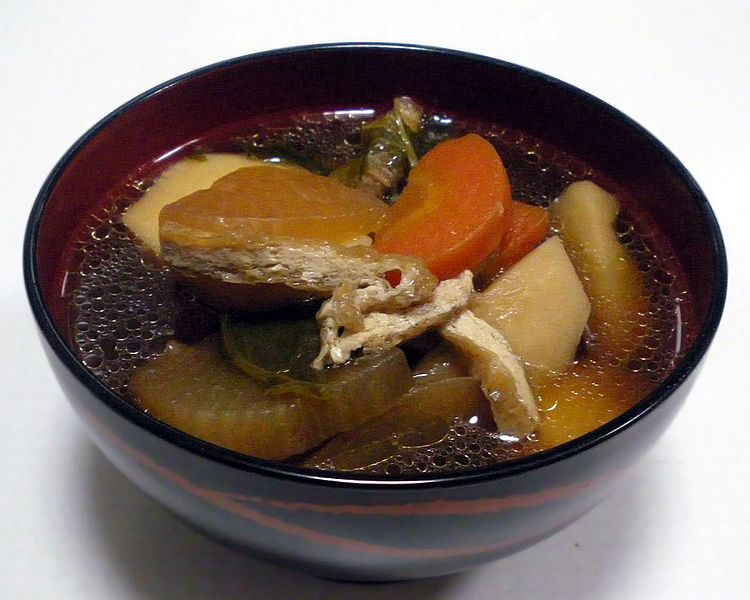
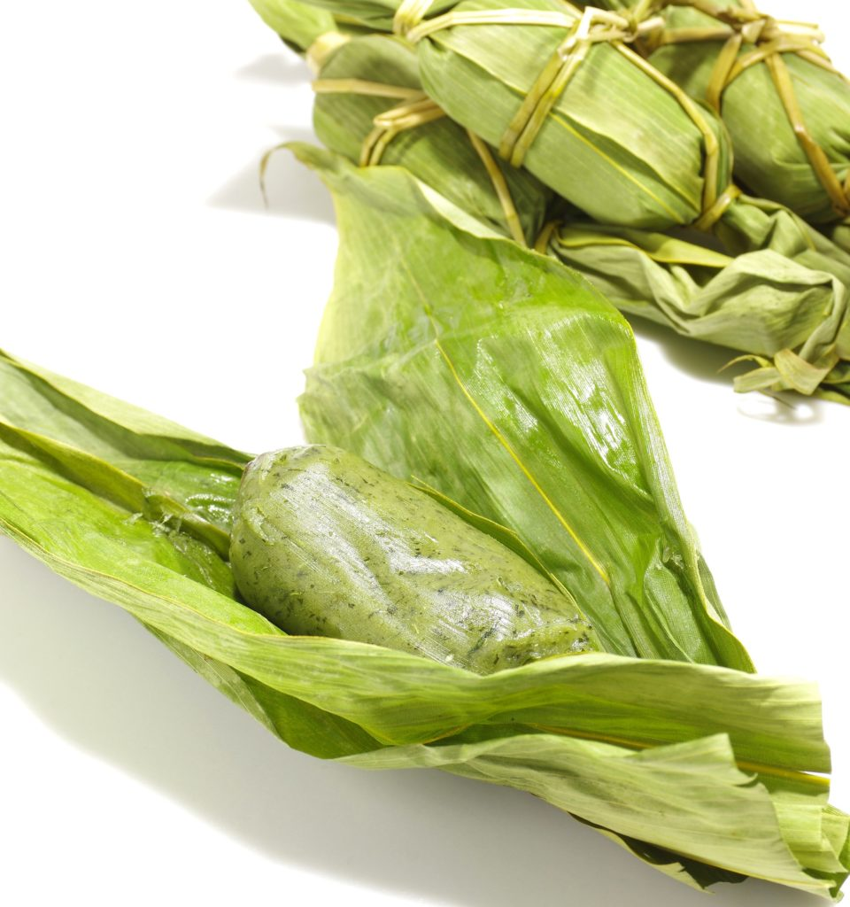
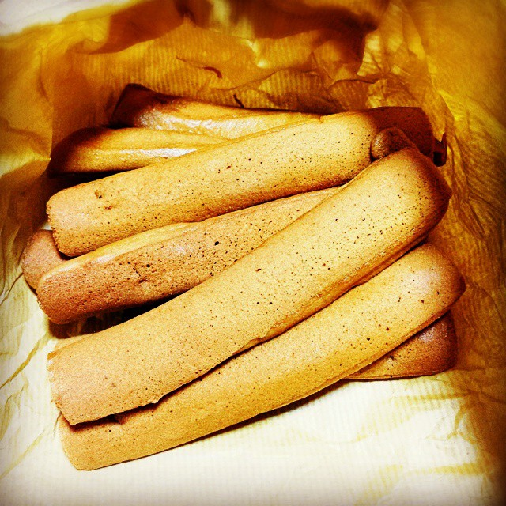

Tokyo,officially the Tokyo Metropolis, is the capital and most populous city of Japan.[8] Formerly known as Edo, its metropolitan area (13,452 square kilometers or 5,194 square miles) is the most populous in the world, with an estimated 37.468 million residents as of 2018;[9] the city proper has a population of 13.99 million people.[4] Located at the head of Tokyo Bay, the prefecture forms part of the Kantō region on the central coast of Honshu, Japan's largest island. Tokyo serves as Japan's economic center and is the seat of both the Japanese government and the Emperor of Japan.

2.1 Introduction
Niigata ( Niigata-shi, ) is a city located in the northern part of Niigata Prefecture (Kaetsu area ). It is the capital and the most populous city of Niigata Prefecture, and one of the cities designated by government ordinance of Japan, located in the Chūbu region of Japan. It is the most populous city on the west coast of Honshu, and the second populous city in Chūbu region after Nagoya. It faces the Sea of Japan and Sado Island. As of 1 September 2022, the city had an estimated population of 779,049, and a population density of 1,072 persons per km2. The total area is 726.45 square kilometres (280.48 sq mi). Greater Niigata, the Niigata Metropolitan Employment Area, has a GDP of US$43.3 billion as of 2010.
It is the only government-designated city on the west coast of Honshu. It has the greatest habitable area of cities in Japan (list of Japanse cities by area [ja]). It is designated as a reform base for the large scale agriculture under (National Strategic Special Zones of Japan [ja]) initiatives.
2.2 Special Food
1.Noppe Stew

Noppe is as familiar to Niigatans as oden (a winter Japanese hotpot dish) is to the whole of Japan — it is omnipresent at festivals, New Year celebrations and everyday family meals.Vegetables are the main ingredients for noppe, with the most popular being konjac potato jelly, carrot, lotus root and shiitake mushroom. The broth is made of soy sauce and cooking wine. Sometimes, taro or starch is added to thicken the broth, hence leading to a regional taste difference. Other local distinctions include salmon roe, chicken, fish, potato and ginkgo nuts
2.Sasadango

Sasadango is a dark green yomogi (mugwort)-flavored dessert filled with sweet red bean paste and wrapped by bamboo leaves. You have probably seen packs of them in shinkansen (bullet train) stations, department stores and gift shops in Niigata.
The food is traditionally eaten at the annual “Boys Day” celebration in May, but now people eat it all year-round. There are even workshops where you can try making it.
3.Poppo-Yaki

Poppo-yaki is a widely loved snack food made simply with wheat flour and brown sugar. They look like pancakes in the shape of long, thin sticks. While poppo-yaki does not have a strong flavor, the subtle brown sugar sweetness and springy texture will make you crave more. Actually, pinching the spongy sticks itself is a joy to many children!
Poppo-yaki tastes best when they are freshly made. It is possible to get it fresh as they are frequently served at festival food stands. If you are in Niigata during its quieter months, get your share of poppo-yaki at the Bandai Bus Center in Niigata City or numerous specialty stores.